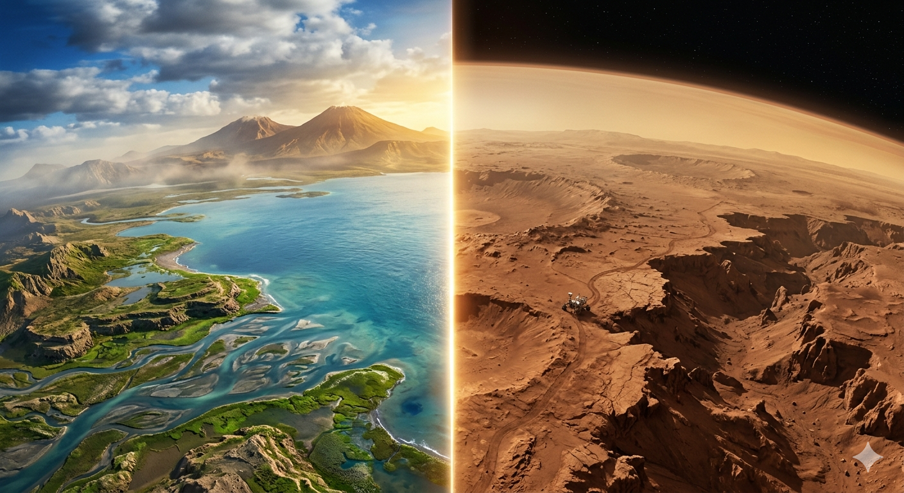
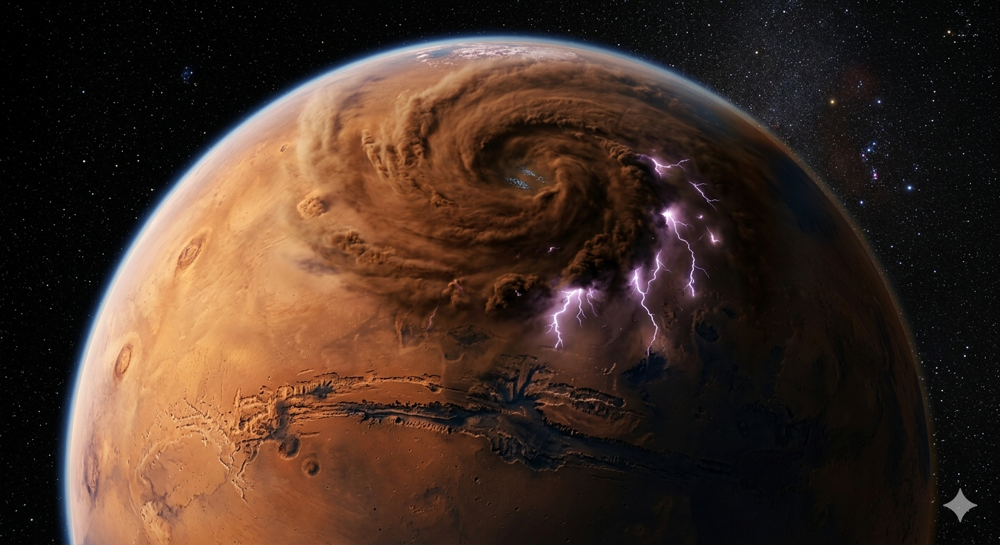
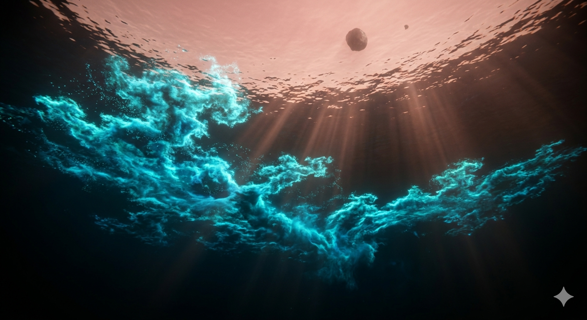
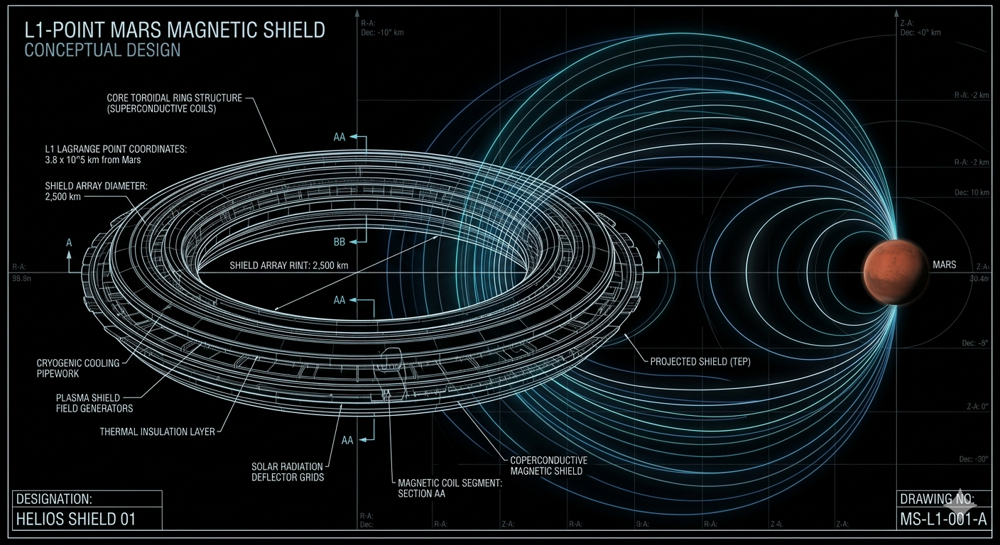

Mars — A Lost World?
Around 4 billion years ago, Mars was not the barren wasteland we see today. In fact, it harboured a thicker atmosphere and all the conditions necessary for life — though whether life ever arose there remains debated. What changed? Mars no longer has a magnetic field because its core, composed similarly to Earth's, has cooled and solidified. This left the red planet exposed to solar wind and radiation, which stripped away its atmosphere and transformed it into the desolate world we know today.

Thermolysis — Unlocking Trapped Oxygen & Water
All that oxygen and water had to go somewhere — and that somewhere is now locked inside rocks and subterranean ice caps. To release these resources, we need to reverse the reactions that sealed them away through thermolysis. In other words: we must melt the Martian surface. The required laser must sustain roughly 5,500 °C to trigger thermolysis, liberating approximately 750 grams of oxygen per cubic metre of Martian rock. Accessing the water beneath means melting nearly 8 metres of surface material, restoring the beds of ancient lakes and rivers.
The Great Storm — Adding Water to the World
Once the Martian surface has been incinerated by our laser array, the planet will enter a violent transitional phase. Raging storms will sweep the globe, raining down the vaporised water released during thermolysis. This tempest could endure for decades before finally relenting, leaving behind nascent lakes and rivers. Alongside water, a strange iron-silicon snow will fall — particles vaporised during the melting that condense into glittering metallic flakes. This violent cleansing process will simultaneously wash away many of the toxic compounds and harmful gases that blanket the surface today.

Nitrogen Import — Balancing the Atmosphere
The storm resolves, but a new problem surfaces: the resulting atmosphere is over 95% oxygen — violently flammable and unable to sustain complex life. Earth's breathable air requires nitrogen as its primary buffer, and we know exactly where to source it. Titan, one of Saturn's moons, maintains an atmosphere composed of roughly 90% nitrogen. Vast automated factories would be deployed on Titan to liquefy this nitrogen and launch it toward Mars via mass drivers — electromagnetic accelerators that propel payloads beyond 2 km/s, enabling direct delivery to the Martian surface on impact.
Seeding Life — Ocean & Land Ecosystems
After nearly a century of effort, Mars would mirror its ancient self — all the conditions for life, restored. But life itself must still be seeded deliberately. As it did on Earth, the journey begins in the oceans. Vast quantities of phytoplankton would be introduced, rapidly proliferating in the nutrient-rich waters and laying the foundation for a marine food chain. Gradually, zooplankton, fish, and eventually apex predators would follow, yielding a thriving aquatic biosphere with minimal additional intervention.

Land ecosystems present a far more complex challenge. Plants require soil — and Mars has only pulverised volcanic rock. Two paths present themselves: wait millennia for water and wind to naturally produce soil, or apply rapid thermal cycling via the laser to shatter surface rock into granular substrate. Add water, and we get mud — then mud that can sustain life. Pioneer species from Earth's volcanic regions would be the first colonisers, gradually breaking rock into richer soil with their roots. In the lower Martian gravity, trees would grow to extraordinary heights never possible on Earth, while their deep roots would accelerate soil production and help the ecosystem become entirely self-sustaining. Insects, mammals, and eventually megafauna could follow.
The Solar Umbrella — Final Shielding
One last obstacle stands between Mars and a living world: the absence of a planetary magnetic field. Without it, solar wind and radiation continuously strip the atmosphere and threaten surface life. The proposed solution is an artificial solar umbrella — a massive superconductive ring positioned at Mars's L1 Lagrange point, powered by nuclear reactors, generating a magnetic dipole field large enough to deflect solar wind away from the entire planet. With this final system in place, Mars would no longer be a wasteland. It would be the next chapter of life in the solar system.
